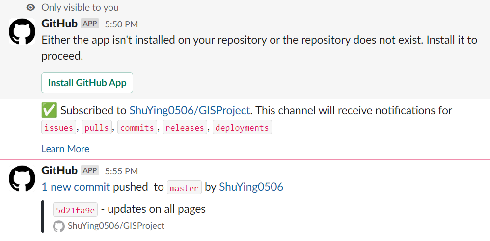

GIS Project Group 7
Welcome to our GIS Project web site. Our group is working on Theme 2: Geography of Accessibility with GIS-based Network Analysis and on specific sub-theme 1: Impact of closures or mergers of education institutions on equity of access.
Our main scope of the project will be make comparison of the past mergers in Year 2019 (20 schools affected) and future mergers from 2020 to 2025 (18 schools affected). We have decided to make a comparison before and after Covid-19 outbreak (Year 2020, Year 2021) in addition to finding out the how impact closures are on education institutions. We believe that it can bring more meaningful insights as compared to targeting a broad scope of mergers of education institutions for analysis.
Data Used:
The data used are as follows:
- Data.gov (School Directory and Information, last updated on: 24 March Year 2021)
Additional Data Created:
- Created an additional CSV file to input all the schools merged in Year 2019
Scope of work:
The scope of work are as follows:
We delegate the roles equally among the 3 of us such that 2 people will be in charge of the QGIS (Edlyn & Beatrice), 3 of us to do posters and report together, 1 person to handle the webpage (Shu Ying). We decided to have this allocation so that all of us can focus on different areas and we can complete the work productively. Even so, all of us are still involved in all of the segments as we meet regularly to complete the project as a team.
Allocation of work:
Selection of project focus and conducting literature review. (Everyone)
Preparing proposal and project website. (Shu Ying)
Data collection, extraction, integration, transformation and wrangling. (Edlyn & Beatrice)
Designing and building GIS model and database. (Edlyn & Beatrice)
Performing GIS analysis. (Shu Ying)
Project webpage. (Shu Ying)
Preparing poster (Beatrice)
Project report (Everyone)
For every updates we have as a team, Shu Ying will make changes on this webpage, commit and push it at the end of the day
Our team have also created a slack group and connected slack with Github so that all members are aware that for every pushes as we will receive updates

Project Links:
Github Link: https://github.com/ShuYing0506/GISProject
Slack workspace: https://smt201group7.slack.com